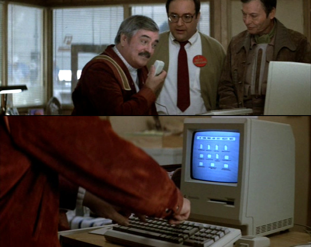

Using Javascript Task Runners for Fun and Profit
Welcome
We are going to be talking about the GruntJS Task Runner, and the tools you need to use to leverage it in your design and development team's workflow.
I am Scott ...
who are you?
Are you speaking complete sentences?
NodeJS, NPM, Grunt .... Yes I am speaking English.
But why would I need this?
Because your time is too valuable to spend it doing any task that can be automated.
Tasks that can be automated quickly?
- Compile SASS/LESS
- Obfuscate/Minify Code
- Serve your working directory as a web site.
- ...Lots of stuff
Do you like it Scott?

Installation - NodeJS
First we must install NodeJS
Installation - GruntJS
This installs the GruntJS Command Line Interface tool globally on your system.
npm install -g grunt-cliConfiguration - GruntJS
Two files we need to use GruntJS
package.json Wizard
npm initMaking your Gruntfile.js
module.exports = function(grunt) {
// Project configuration.
grunt.initConfig({
pkg: grunt.file.readJSON('package.json'),
// Tasks
});
// Load the plugin that provides the "whatever" task.
grunt.loadNpmTasks('');
// Default task(s).
grunt.registerTask('default', ['']);
};
BUT I WANT IT TO DO STUFF!?!

Install Plugin - CONNECT
npm install grunt-contrib-connect --save-devgrunt.loadNpmTasks('grunt-contrib-connect');Configure Plugin - CONNECT
module.exports = function(grunt) {
grunt.initConfig({
pkg: grunt.file.readJSON('package.json'),
connect: {
server: {
options: {
port: 8000,
base: '.'
}
}
}
});
grunt.loadNpmTasks('grunt-contrib-connect');
grunt.registerTask('default', ['connect']);
};
LIVE CODING